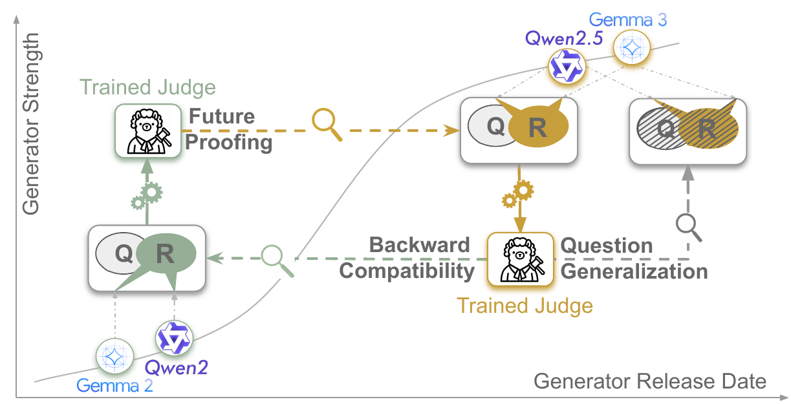

Download figure PDF
(cropped to match the paper; LaTeX trim=120pt 110pt 160pt 70pt at 200 dpi).
Abstract
The LLM-as-a-judge paradigm is widely used in both evaluating free-text model responses and reward modeling for model alignment and finetuning. Recently, finetuning judges with judge-specific data has emerged as an often-practiced way to improve judge quality, especially for smaller model sizes while being more robust to common biases. However, the standard evaluation ignores several practical concerns of finetuned judges regarding their real world deployment. In this paper, we identify and formalize three aspects that affect the shelf life of these judges: future-proofing and backward-compatibility — how well judges finetuned on responses by today's generator models perform on responses by future models or past models, as well as question generalization — how well judges generalize to unseen questions at test time. We study these three aspects under a unified framework with varying train and test distributions in two reasoning datasets, three SFT- and DPO-based fine-tuning algorithms, and three different backbone models. Experiments suggest that future-proofing is challenging for most models, while backward-compatibility is relatively easy, with DPO-trained models consistently improving performance. We further find that continual learning provides a more balanced adaptation to shifts between older and newer response distributions than training solely on stronger or weaker responses. Moreover, all models observe certain degrees of performance degradation when moving from questions seen during training to unseen ones, showing that current judges do not fully generalize to unseen questions. These findings provide insights into practical considerations for developing and deploying judge models in the face of ever-changing generators.

Additional results (replace with your own figures).
Second image description.

Third image description.

Fourth image description.
Video Presentation
Embed your official ICLR talk or a short explainer YouTube video here when available. For now, see the paper on arXiv or OpenReview.
Another Carousel
BibTeX
@inproceedings{
singh2026on,
title={On the Shelf Life of Fine-Tuned {LLM}-Judges: Future-Proofing, Backward-Compatibility, and Question Generalization},
author={Janvijay Singh and Austin Xu and Yilun Zhou and Yefan Zhou and Dilek Hakkani-T{\"u}r and Shafiq Joty},
booktitle={The Fourteenth International Conference on Learning Representations},
year={2026},
url={https://openreview.net/forum?id=fVTqNpny5r}
}